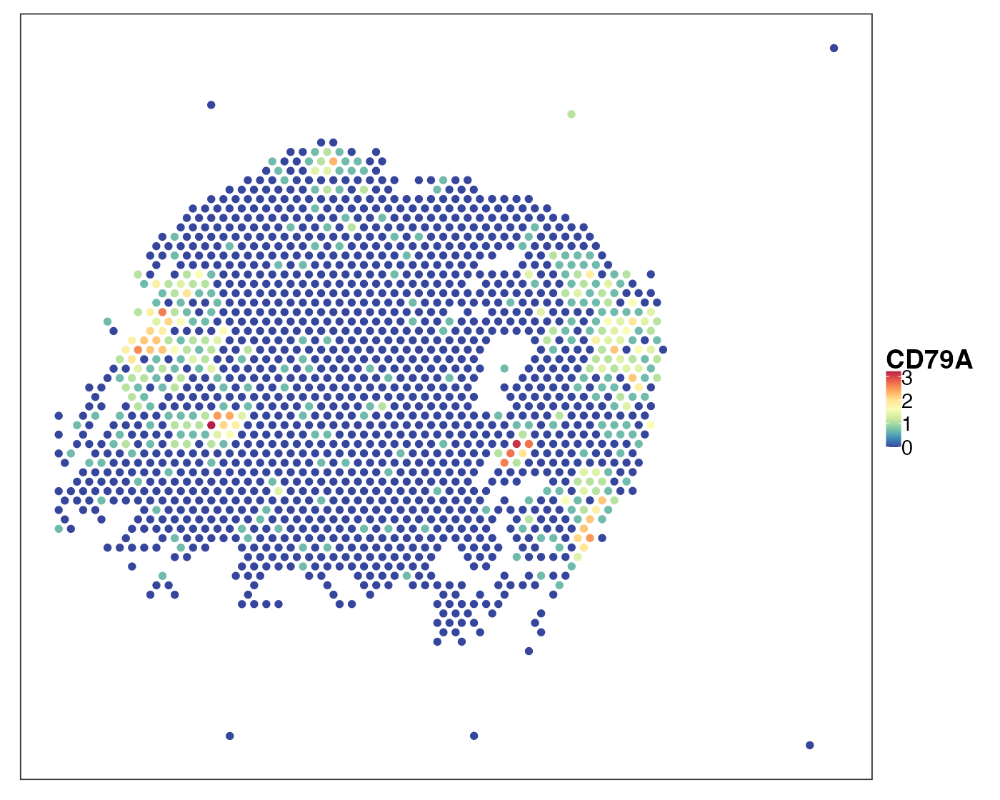
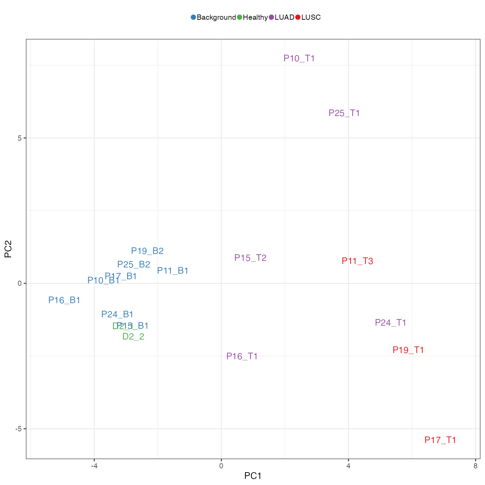
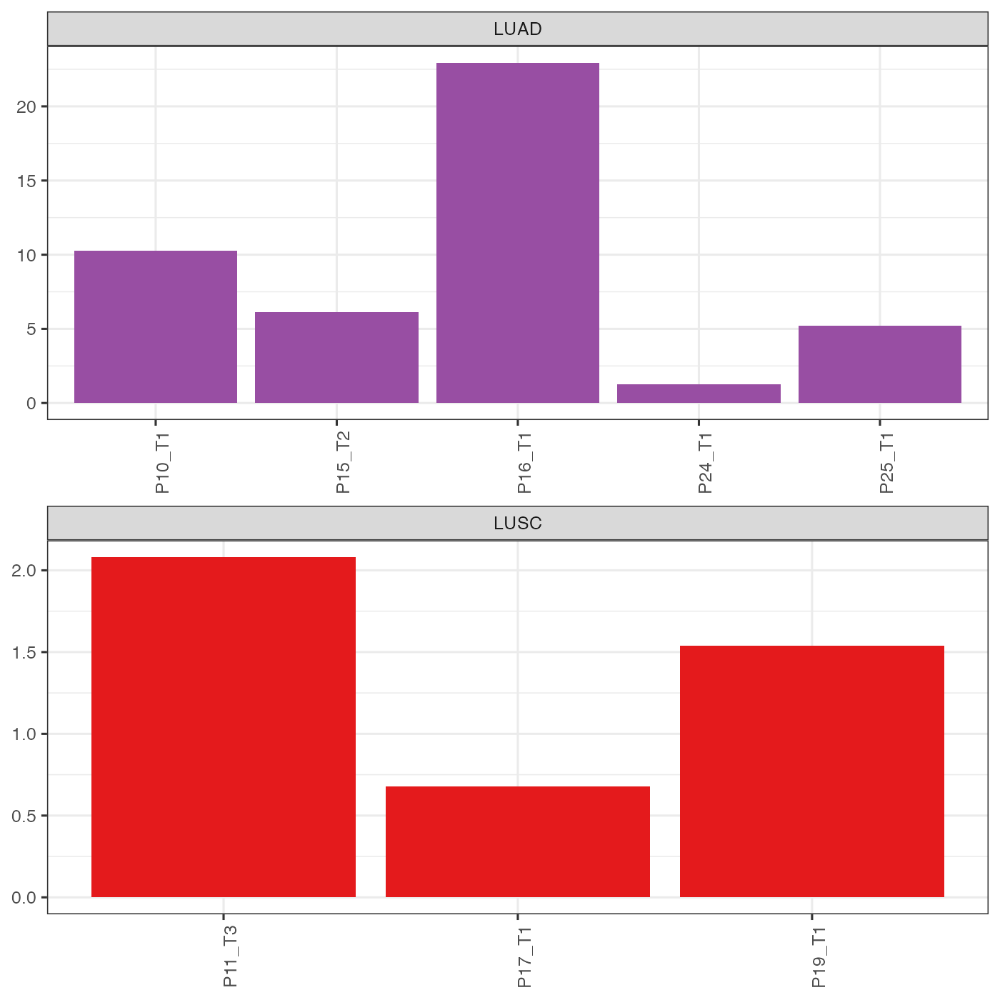

Visium: cell type deconvolution for multi-cellular spots
Jiadong Mao
2025-04-29
Visium.RmdHighlights
Interpretable cell type deconvolution;
Healthy reference annotates cancerous query;
Insightful cell type colocalisation analysis.
Introduction
In this case study, we will apply PhiSpace to cell type deconvolution:
- Query: Visium dataset consisting of samples from non-small cell lung cancer (NSCLC) patients (De Zuani et al., 2024).
- Reference: the Human Lung Cell Atlas (HLCA) scRNA-seq data (Sikkema et al., 2023).
10x Visium is a supercellular spatial transcriptomics (ST) platform. The minimal measurement unit for the Visium platform are 55μm spots, where each spot potentially contains multiple cells. In this context, cell type deconvolution refers to the statistical task of estimating the cell type abundance in each spot.
For this case study, we have defined some util functions, which can be downloaded here.
# Name of the game
suppressPackageStartupMessages(library(PhiSpace))
# Tidyverse packages
suppressPackageStartupMessages(library(ggplot2))
suppressPackageStartupMessages(library(dplyr))
suppressPackageStartupMessages(library(magrittr))
suppressPackageStartupMessages(library(ggpubr))
suppressPackageStartupMessages(library(tidyr))
# Other utils
suppressPackageStartupMessages(library(qs)) # Fast read and write of large R objects
suppressPackageStartupMessages(library(ComplexHeatmap)) # plot heatmap
dat_dir <- "~/Dropbox/Research_projects/PhiSpace/VignetteData/Visium/" # replace this by your own directory
source(paste0(dat_dir, "Visium_utils.R"))Data preparation
Download the following files:
- Reference, which is a 10% subset of the HLCA.
- Query, which is a list of 40 Visium samples from healthy and cancerous lungs. As in our PhiSpace paper, we will only use 18 of them (1 background + 1 cancerous from each of 9 patients) which are of better data quality.
- The PhiSpace importance scores, which measures how important all the gene features are for predicting cell types in the reference.
reference <- qread(paste0(dat_dir, "data/LungRef/AzimuthLung2.0_sce_0.1sub.qs"))
impScores <- qread(paste0(dat_dir, "output/refImpScores.qs"))
query_list <- qread(paste0(dat_dir, "data/Visium_NSCLC/allTissues.qs"))[1:18]Visualise a cancerous sample P11_T3. Here we look at two markers: KRT19 (also known as CYFRA21-1), a NSCLC marker and CD79A, a B cell marker.
VisTissueName <- "P11_T3"
qu_vis <- query_list[[VisTissueName]]
VizSpatial(qu_vis, feature = "KRT19", assay2use = "log1p")
VizSpatial(qu_vis, feature = "CD79A", assay2use = "log1p")
Run PhiSpace
Run PhiSpace using all the genes can be RAM-demanding, hence we select 500 genes that are most useful for predicting each cell type. This gives us 4613 genes. However, if RAM is still not enough, simply download the annotation results from here.
YtrainName <- "ann_finest_level"
selectedFeat <- selectFeat(impScores, 500)$selectedFeat
length(selectedFeat)## [1] 4613
PhiResPath <- paste0(dat_dir, "output/combo_PhiRes.qs")
if(!file.exists(PhiResPath)){
PhiRes <- PhiSpaceR_1ref(
reference,
query_list,
phenotypes = YtrainName,
PhiSpaceAssay = "log1p",
selectedFeat = selectedFeat,
regMethod = "PLS",
center = T,
scale = F
)
qsave(PhiRes$PhiSpaceScore, PhiResPath)
} else {
PhiRes <- qread(PhiResPath)
}As an example, we visualise the predicted B cell abundance in sample P11_T3.
reducedDim(qu_vis, "PhiSpace") <- PhiRes[["P11_T3"]]
VizSpatial(qu_vis, reducedDim = "B cells", reducedDim2use = "PhiSpace", censor = T)How about the performance of other deconvolution methods? How to compare their performances when there is no ground truth? See the Visium case study in our PhiSpace ST paper for more details (spoiler alert: PhiSpace was the best).
Multi-sample cell type co-localisation analysis
Obtaining interpretable cell type deconvolution results is only the first steps towards discovery of spatial biology. We showcase one type of analysis that can be done based on PhiSpace deconvolution - cell type colocalisation. The main idea is that, from each sample, we calculate a cell type correlation matrix (called co-presence matrix in our PhiSpace ST paper), representing how cell types tend to colocalised. Then we apply dimension reduction methods to these matrices (vectorised) to visualise them.
First we calcualte the sample-specific correlation matrices and vectorise them.
VisTissueNames <- names(query_list)
corMat_list <- vector("list", length(VisTissueNames)) %>% `names<-`(VisTissueNames)
for(ii in 1:length(VisTissueNames)){
VisTissueName <- VisTissueNames[ii]
PhiScores_norm <- normPhiScores(PhiRes[[VisTissueName]])
corMat <- cor(PhiScores_norm)
corMat_list[[ii]] <- corMat
}
cTypeCombo <- outer(
rownames(corMat_list[[1]]), colnames(corMat_list[[1]]),
function(x, y) paste0(x, "<->", y)
)
corMatVec <- sapply(corMat_list, function(x) as.vector(x[lower.tri(x)])) %>%
`colnames<-`(VisTissueNames) %>%
`rownames<-`(cTypeCombo[lower.tri(cTypeCombo)]) %>% t()Next we simply compute a PCA of all correlation matrices. It turns out that a simple PCA suffices here as the signal is very strong.
We visualise the first two PCs. As we can see, all samples were well separated into groups according to disease conditions:
- Healthy: samples from healthy donors;
- Background: non-cancerous tissue from cancerous samples;
- LUAD: lung adenocarcinoma;
- LUSC: lung squamous cell carcinoma.
tempPCAplot(pca_res) + expand_limits(x = c(-5.5, 7.5))
loadBarplot(pca_res$loadings, nfeat = 20) + theme(axis.text.x = element_text(angle = 45))In addition to the separation of patients, we can also observe that LUSC samples tend to have the largest PC1 values, healthy and background the lowest, and LUAD samples having intermediate PC1 values. Given that LUSC tends to have worse prognosis than LUAD, layout of the PC plot about seems to suggest that PC1 represent prognosis to some degree. Lacking detailed information about patient prognosis from the original publication, we opt for a data-driven way to find out.
According to Chen &
Dhahbi (2021), CELSR2 is a marker for better prognosis in LUSC;
KRT17, KRT6A, S100A2, TRIM29, REPS1, and GPC1 are markers for worse
prognosis in LUAD; PERP, ELFN2, ARHGAP12 and QSOX1 are markers for
better prognosis in LUSC. Based on how the favourable prognosis markers
are upregulated (see definition of meanEsts in
Visium_utils.R), we calculated the prognosis scores for all
patients.
Note that since the markers are different for LUSC and LUAD, we cannot directly compare prognosis scores between LUSC and LUAD patients. However, the scores are still informative. For example, P24 was predicted to have the worst prognosis (lowest favourable prognosis score) among LUAD patients, which probably explained why it was located closer to LUSC patients on the PCA scatter plot above.
# Common gene of all Visium slides
commonGeneNames <- Reduce(intersect, lapply(query_list, function(x) rownames(x)))
mk_list <- list(
LUSC_good = c("CELSR2"),
LUAD_bad = c("KRT17", "KRT6A", "S100A2", "TRIM29", "REPS1", "GPC1"),
LUAD_good = c("PERP", "ELFN2", "ARHGAP12", "QSOX1")
)
mk_list <- lapply(mk_list, function(x) intersect(x, commonGeneNames))
# Function for calculate mean expression level of marker genes in all tissues
assay2use <- "counts"
meanGeneLvls <- sapply(query_list[1:18], function(x) mean(rowSums(assay(x, assay2use))))
mkLvls_LUSC <- data.frame(favourable = meanEsts(mk_list[["LUSC_good"]]))
mkLvls_LUAD_good <- data.frame(favourable = meanEsts(mk_list[["LUAD_good"]]))
mkLvls_LUAD_bad <- data.frame(favourable = meanEsts(mk_list[["LUAD_bad"]]))
mkLvls_LUAD <- mkLvls_LUAD_good/mkLvls_LUAD_bad
data.frame(
favourable = c(
mkLvls_LUSC[Visium_cancerTypes == "LUSC",],
mkLvls_LUAD[Visium_cancerTypes == "LUAD",]
),
sample = c(
VisTissueNames[Visium_cancerTypes == "LUSC"],
VisTissueNames[Visium_cancerTypes == "LUAD"]
),
cancerType = c(
Visium_cancerTypes[Visium_cancerTypes == "LUSC"],
Visium_cancerTypes[Visium_cancerTypes == "LUAD"]
)
) %>%
ggplot() + geom_bar(aes(sample, favourable, fill = cancerType), stat = "identity") +
scale_fill_manual(values = VisiumCancerCols) + theme_bw(base_size = 12) +
theme(axis.text.x = element_text(angle = 90), axis.title.x = element_blank()) +
facet_wrap(~cancerType, scales = "free", ncol = 1) +
theme(legend.position = "none", axis.title.y = element_blank()) 
To focus on the role of immune cell types, we repeat the above analysis using only immune cell types. The separation of disease conditions was largely retained. Note how plasmacytoid dendritic cells (pDCs) played an important role in explaining the separation of samples along PC1.
immuneDF <- data.frame(
celltype = rownames(corMat_list[[1]]),
immuneOrNot = c(
"immune", "immune", "other",
"immune", "other", "other",
"other", "immune", "other",
"other", "immune", "other",
"other", "immune", "other",
"other", "other", "other",
"immune", "immune", "immune",
"other", "other", "other",
"immune", "other", "other",
"other", "other", "other",
"other", "other", "other",
"other", "other", "other",
"immune", "immune", "other",
"immune", "immune", "immune",
"other", "other", "other",
"other", "other", "other",
"other", "other", "other",
"immune", "other", "other",
"other", "immune", "immune",
"other", "other", "other",
"immune"
)
)
immuneCellTypes <- immuneDF$celltype[immuneDF$immuneOrNot == "immune"]
intDF <- do.call("rbind", stringr::str_split(colnames(corMatVec), "<->"))
intIdx <- apply(
intDF, 1,
function(x) (x[1] %in% immuneCellTypes) | (x[2] %in% immuneCellTypes)
)
set.seed(92399)
corMatVec_immune <- corMatVec[,intIdx]
pcaImmune_res <- getPC(corMatVec_immune, ncomp = 2, center = T, scale = F)
tempPCAplot(pcaImmune_res) + expand_limits(x = c(-4, 4))
loadBarplot(pcaImmune_res$loadings, "comp1", nfeat = 20)